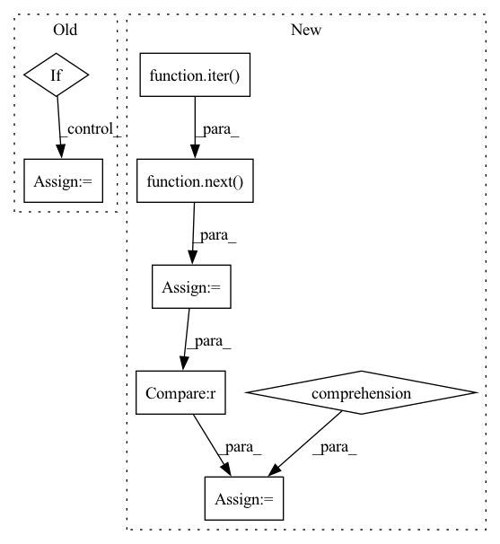

Pattern ID :2055
Before Change
loop = tqdm(test_loader)
for batch_idx, frames in enumerate(loop):
if i >= 10: break
frames = frames.to(DEVICE) // [1, T, 3, h, w]
frames_vis = postprocess_img(frames.squeeze(dim=0)) // [T, 3, h, w]
input = frames[:, :VIDEO_IN_LENGTH] // [1, t, 3, h, w]
pred_rgb = pred_rgb_model.pred_n(input, pred_length=VIDEO_PRED_LENGTH) // [1, T, 3, h, w]
pred_rgb_vis = postprocess_img(pred_rgb) // [T, 3, h, w]
pred_rgb = torch.cat([input, pred_rgb], dim=1)
pred_rgb = torch.stack([seg_model(pred_rgb[:, i]) for i in range(pred_rgb.shape[1])], dim=1)
pred_rgb = pred_rgb.argmax(dim=2).squeeze() // [T, h, w]
pred_then_colorized_vis = colorize_semseg(postprocess_mask(pred_rgb), num_classes=SYNPICK_CLASSES) // [T, 3, h, w]
frames_seg = [seg_model(frames[:, i]).argmax(dim=1) for i in range(frames.shape[1])]
frames_seg = torch.stack(frames_seg, dim=1) // [1, 1, h, w]
input_seg = frames_seg[:, :VIDEO_IN_LENGTH] // [1, t, 1, h, w]
pred_mask = pred_mask_model.pred_n(input_seg, pred_length=VIDEO_PRED_LENGTH)After Change
test_data = SynpickVideoDataset(data_dir=data_dir, vid_type=("rgb", 3), num_frames=VIDEO_TOT_LENGTH,
step=4, allow_overlap=VID_DATA_ALLOW_OVERLAP)
test_loader = DataLoader(test_data, batch_size=1, shuffle=True, num_workers=4)
iter_loader = iter( test_loader)
with torch.no_grad():
for i in tqdm(range(10)):
frames = next( iter_loader) .to(DEVICE) // [1, T, 3, h, w]
frames_vis = postprocess_img(frames.squeeze(dim=0)) // [T, 3, h, w]
input = frames[:, :VIDEO_IN_LENGTH] // [1, t, 3, h, w]
pred_rgb = pred_rgb_model.pred_n(input, pred_length=VIDEO_PRED_LENGTH)
pred_rgb = torch.cat([input, pred_rgb], dim=1) // [1, T, 3, h, w]
pred_rgb_vis = postprocess_img(pred_rgb.squeeze(dim=0)) // [T, 3, h, w]
pred_rgb = torch.stack([seg_model(pred_rgb[:, i]) for i in range(pred_rgb.shape[1])], dim=1)
pred_rgb = pred_rgb.argmax(dim=2).squeeze() // [T, h, w]
pred_then_colorized_vis = colorize_semseg(postprocess_mask(pred_rgb), num_classes=SYNPICK_CLASSES).transpose(0, 3, 1, 2) // [T, 3, h, w]
frames_seg = torch.stack([seg_model(frames[:, i]) for i in range(frames.shape[1])], dim=1).argmax(dim=2) // [1, T, 1, h, w]
frames_seg_in = torch.stack([(frames_seg == i) for i in range(SYNPICK_CLASSES)], dim=2).float() // [1, T, c, h, w] one-hot float
input_seg = frames_seg_in[:, :VIDEO_IN_LENGTH] // [1, t, c, h, w]
pred_mask = pred_mask_model.pred_n(input_seg, pred_length=VIDEO_PRED_LENGTH).argmax(dim=2) // [1, n, 1, h, w]
pred_mask = torch.cat([input_seg.argmax(dim=2), pred_mask], dim=1).squeeze() // [T, h, w]In pattern: SUPERPATTERN
Frequency: 3
Non-data size: 8
Instances Fragment ID: 8946268
Project Name: ais-bonn/vp-suite
Commit Name: 13016d4ab8ba4f8e7ee087155a6c5171f4d00ba3
Time: 2021-08-02
Author: boltres@ais.uni-bonn.de
File Name: scripts/visualize_4_way.py
M Class Name: AnonimousClass
N Class Name: AnonimousClass
M Method Name: visualize_4_way(1)
N Method Name: visualize_4_way(1)
M Parent Class:
N Parent Class:
M File Name: scripts/visualize_4_way.py
N File Name: scripts/visualize_4_way.py
M Start Line: 16
M End Line: 73
N Start Line: 17
N End Line: 74
Before Change
// Do this before wrapping.
eval_dataset = dataloader.dataset
if is_torch_tpu_available():
dataloader = pl.ParallelLoader(dataloader, [args.device]).per_device_loader(args.device)
if args.past_index >= 0:
self._past = NoneAfter Change
self.infer_sess = None
// Check if there are labels in the dataset
dummy_inputs = next(iter( dataloader) )
has_labels = all(dummy_inputs.get(k) is not None for k in self.label_names)
if self.onnx_model_path and (has_labels == self.exported_with_loss):
logger.info("[INFO] Inference with given ONNX model") Fragment ID: 8946272
Project Name: huggingface/optimum
Commit Name: 1c4b5b1caf1f1a58c32898ffb208538d7364b73a
Time: 2022-04-29
Author: 44135271+JingyaHuang@users.noreply.github.com
File Name: optimum/onnxruntime/trainer.py
M Class Name: ORTTrainer
N Class Name: ORTTrainer
M Method Name: evaluation_loop_ort(6)
N Method Name: evaluation_loop_ort(6)
M Parent Class: Trainer
N Parent Class: Trainer
M File Name: optimum/onnxruntime/trainer.py
N File Name: optimum/onnxruntime/trainer.py
M Start Line: 791
M End Line: 894
N Start Line: 751
N End Line: 767
Before Change
model.eval()
if is_torch_tpu_available():
dataloader = pl.ParallelLoader(dataloader, [args.device]).per_device_loader(args.device)
if args.past_index >= 0:
self._past = NoneAfter Change
self.infer_sess = None
// Check if there are labels in the dataset
dummy_inputs = next(iter( dataloader) )
has_labels = all(dummy_inputs.get(k) is not None for k in self.label_names)
if self.onnx_model_path and (has_labels == self.exported_with_loss):
logger.info("[INFO] Inference with given ONNX model") Fragment ID: 8946275
Project Name: huggingface/optimum
Commit Name: 1c4b5b1caf1f1a58c32898ffb208538d7364b73a
Time: 2022-04-29
Author: 44135271+JingyaHuang@users.noreply.github.com
File Name: optimum/onnxruntime/trainer.py
M Class Name: ORTTrainer
N Class Name: ORTTrainer
M Method Name: prediction_loop_ort(6)
N Method Name: prediction_loop_ort(6)
M Parent Class: Trainer
N Parent Class: Trainer
M File Name: optimum/onnxruntime/trainer.py
N File Name: optimum/onnxruntime/trainer.py
M Start Line: 993
M End Line: 1075
N Start Line: 951
N End Line: 970